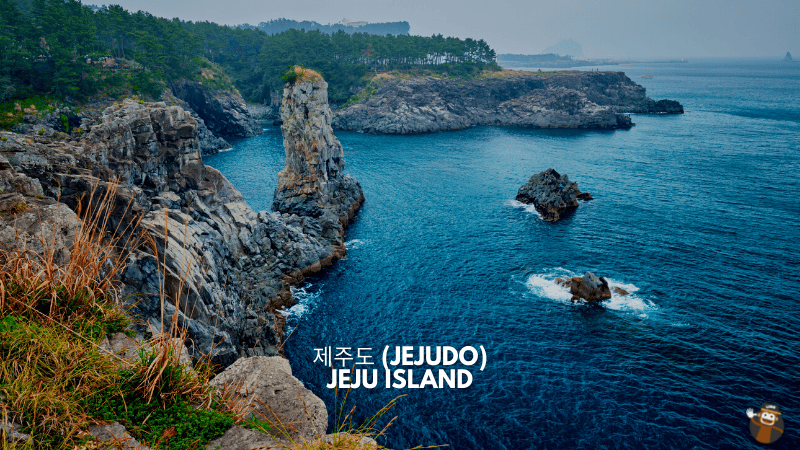

PLACE I WANT TO VISIT IN KOREA

One of South Korea is known for is its skincare products. When we talk about skin care products, there’s one that will always be associated with Jeju Island. This volcanic island is one of the most beautiful places and tourist attractions in South Korea. To give you an idea of how beautiful it is, go back to the K-dramas.
Jeju Island is one of the most sought-after travel destinations in South Korea because of its incredible beauty. It is the home of Hallasan, a shield volcano, and is considered the highest mountain in South Korea. Jeju Island is interesting for tourists is the volcanic mountains and lava tubes. It is called Koreas Hawaii. This island is also known as the Island of the Gods. This appellation came from the legend that demi-gods once lived on this island.